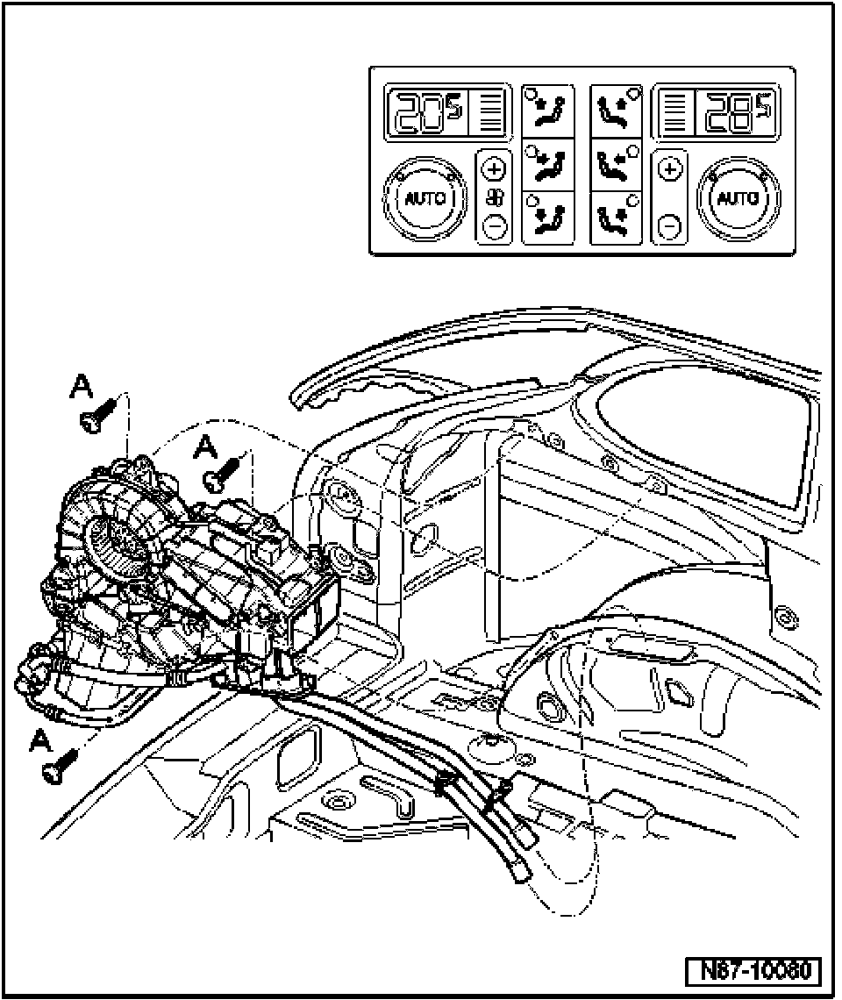

Rear Heating and A/C Unit, Service Position
Rear Heating And A/C Unit, Service Position

NOTE:
- Service position allows access to unit components (motors, etc.) for servicing.
- Servicing refrigerant circuit.
- Before carrying out any work on the A/C refrigerant system, refer to all CAUTIONS and WARNINGS in A/C refrigerant system safety measures.
- Refrigerant hoses remain connected when rear heating and A/C unit unit is in service position.
- Remove left rear side trim
- Remove screws -A- (8 Nm)
- Tilt complete unit to right.
NOTE: After returning rear heating and A/C unit from service position (and/or removing and reinstalling) always ensure proper installation of rear evaporator water drain hose/valve.